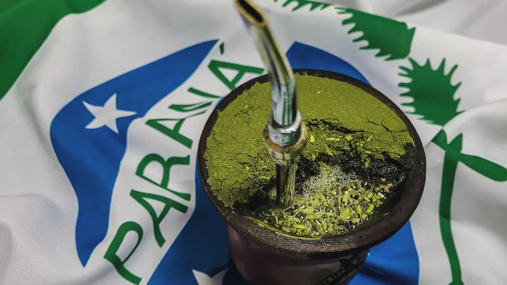
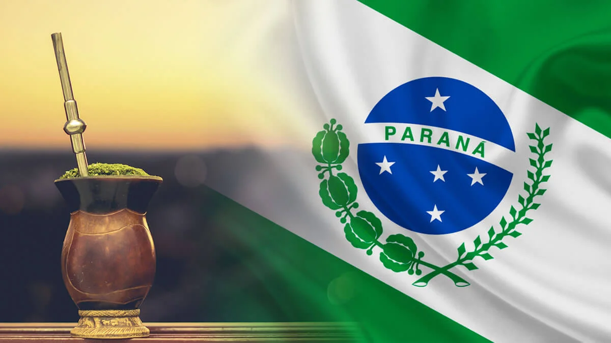

IMPORTANCIA CULTURA
O chimarrão tem uma relação muito forte com a arte e a cultura do Paraná, principalmente por fazer parte da identidade e das tradições do povo paranaense, especialmente nas regiões Sul e Oeste do estado. Tradição e convivência: o chimarrão é uma bebida tradicional feita com erva-mate e costuma ser compartilhada entre familiares e amigos. O ato de tomar chimarrão representa amizade, hospitalidade e união. Erva-mate e história: o Paraná é historicamente um importante produtor de erva-mate. A exploração e o comércio da erva tiveram grande importância econômica e ajudaram a formar a cultura do estado. Artesanato: a cultura do chimarrão aparece em cuias, bombas e outros objetos decorados por artesãos. Esses objetos podem apresentar desenhos e elementos que representam a identidade regional. Música, dança e festas: o chimarrão está presente em manifestações da cultura tradicionalista, junto com músicas, danças e costumes de origem gaúcha e de outras populações que contribuíram para a formação cultural do Paraná. Identidade paranaense: a erva-mate e o chimarrão também aparecem em representações artísticas e culturais que valorizam a história e os costumes do estado. Em resumo: o chimarrão não é apenas uma bebida no Paraná. Ele funciona como um símbolo de tradição, convivência e identidade cultural, influenciando o artesanato, as festas, a música e outras formas de expressão artística.

CHIMARRAO
A erva-mate é nativa do Sul da América do Sul e já era utilizada pelos povos indígenas, principalmente Guarani e Kaingang, muito antes da chegada dos europeus. No território que hoje é o Paraná, seu consumo e conhecimento já existiam antes do século XVI. A partir da colonização, espanhóis e jesuítas passaram a explorar e comercializar a erva-mate. Porém, foi no século XIX, principalmente a partir de 1820, que ela se tornou uma grande atividade econômica no Paraná. Comerciantes como Francisco de Alzagaray instalaram engenhos em Paranaguá, iniciando uma fase de industrialização. A erva-mate era produzida no interior e no planalto, beneficiada em engenhos e transportada para o litoral por tropeiros, pela Estrada da Graciosa e, depois de 1885, pela ferrovia Curitiba–Paranaguá. De Paranaguá e Antonina, era exportada principalmente para Argentina e Uruguai. O crescimento do comércio ajudou na emancipação do Paraná em 1853, no desenvolvimento de Curitiba e no surgimento de uma elite econômica conhecida como os “barões do mate”. Entre os principais nomes estavam Ildefonso Pereira Correia (Barão do Serro Azul), a família Fontana e a família Leão. A Guerra do Paraguai (1864–1870) também favoreceu as exportações paranaenses, pois prejudicou a produção paraguaia e aumentou o espaço para o mate brasileiro. O dinheiro do mate ajudou a financiar fábricas, ferrovias, comércio, palacetes, instituições culturais e a Universidade do Paraná (atual UFPR), fundada em 1912. A partir do início do século XX, especialmente depois de 1914, a erva-mate perdeu gradualmente sua posição de principal atividade econômica, com o crescimento de outros setores. A história da erva-mate no Paraná começou com os povos indígenas, passou pela exploração colonial e, a partir de 1820, transformou-se em um grande ciclo econômico, responsável por impulsionar a industrialização, urbanização e formação política e econômica do Paraná.

CURIOSIDADES
CURIOSIDADES 1
A importância da erva-mate na história do Paraná Você sabia que a erva-mate teve um papel fundamental na história e no desenvolvimento econômico do Paraná? No século XIX, ela se tornou um dos principais produtos de exportação da região, contribuindo para o crescimento da economia paranaense e para o desenvolvimento de diversas cidades. Muito antes disso, os povos indígenas, especialmente os Guarani, já conheciam e utilizavam as folhas da erva-mate para preparar bebidas e aproveitar suas propriedades estimulantes. Com o passar do tempo, esse costume foi incorporado por outras populações e se tornou uma tradição muito forte no Sul do Brasil. No Paraná, a produção da erva-mate impulsionou a construção de engenhos, a criação de empregos e o comércio com outros países, principalmente Argentina e Uruguai. Durante o século XIX e o início do século XX, a atividade ervateira foi tão importante que ajudou a transformar a economia e a identidade cultural do estado. Além de sua importância econômica, a erva-mate continua presente no cotidiano dos paranaenses por meio do chimarrão e do tereré. Seu cultivo também faz parte da história de várias comunidades rurais, mantendo vivas tradições transmitidas de geração em geração. Assim, a erva-mate não é apenas uma planta: ela representa uma parte importante da história, da cultura e das tradições do Paraná.
CURIOSIDADE 2
A erva-mate e a preservação da natureza no Paraná Uma informação importante sobre a erva-mate é que ela é uma planta nativa da América do Sul e se desenvolve naturalmente em áreas de Floresta com Araucárias, presentes no Paraná. Tradicionalmente, seu cultivo é realizado à sombra de árvores maiores, como o pinheiro-do-paraná, contribuindo para a conservação da biodiversidade quando feito em sistemas agroflorestais. Além disso, a produção da erva-mate tem grande importância para muitas famílias de agricultores paranaenses, gerando renda e ajudando a preservar conhecimentos tradicionais. O Paraná é um dos principais estados produtores de erva-mate do Brasil, e essa atividade continua sendo importante para a economia e a identidade cultural da região. Assim, a erva-mate une cultura, economia e natureza, sendo um símbolo da riqueza natural e das tradições do povo paranaense.